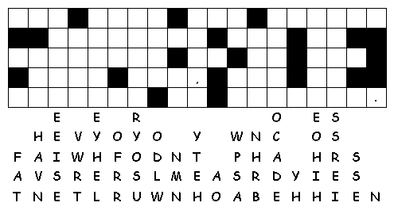

This
week's lessons: Acts
3:12-19, Psalm
4, 1
John 3:1-7, Luke
24:36b-48
Elementary School Pew-work
|
Listen hard to the Psalm. Afterward, unscramble the words:
1You
are my God and protector.
2How
long will you people
3The
LRDO _______ has chosen
4But
each of you
5Offer
the proper sacrifices
6There
are some who ask,
7You
brought me more happiness
8I
can lie down |
 |
Next Week: Acts 4:5-12, Psalm 23, 1 John 3:16-24, John 10:11-18